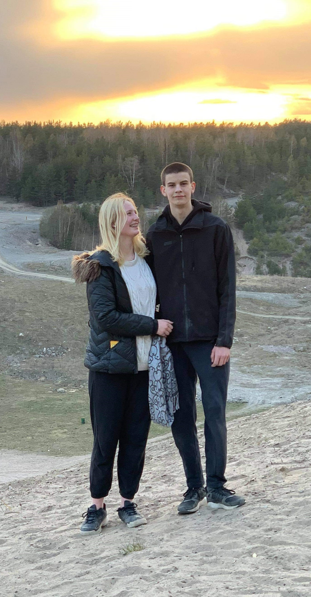
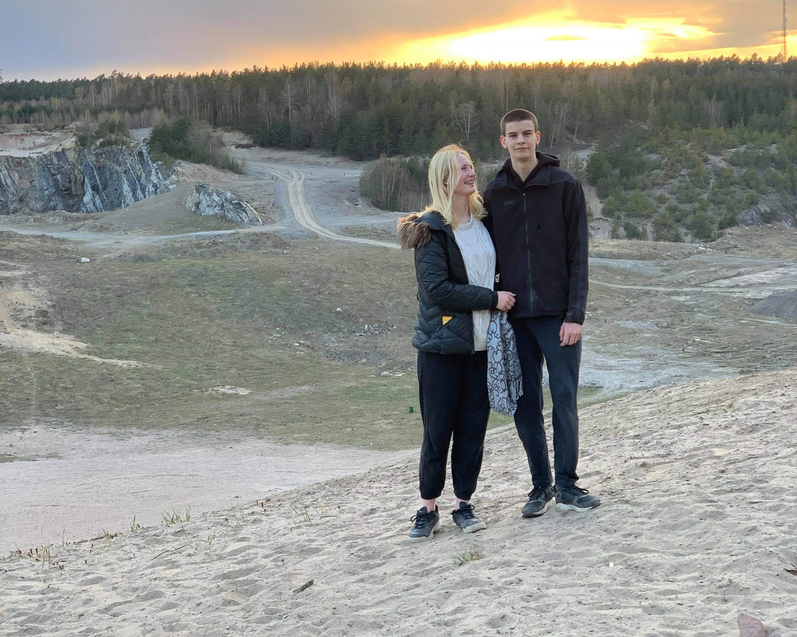
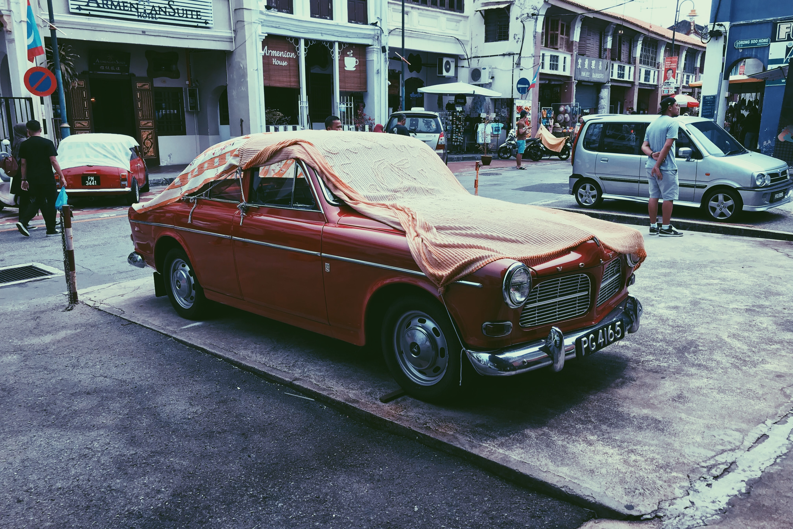
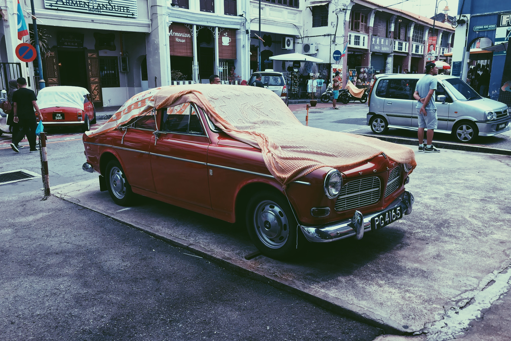

Om mig
Jag heter Jonatan och på den här sidan kan du hitta mina projekt som jag gjort samt lite om mig. På min fritid gillar jag att spela piano, hålla på med datorn t.ex spela och prorammera men jag är också intreserad av bilar och särskilt volvo bilar, helst gamla. Själv har jag en A-traktor volvo 744. När jag spelar piano brukar jag mest spela klassisk musik såsom Mozar, beethoven eller bach t.ex. Mina favorit stycken inom den klassiska musiken är rondo alla turca, solfegietto, la campanella bland annat. Sen gillar jag också att lyssna på dansband då Lotta Engberg är en av mina favorit artister.

 
